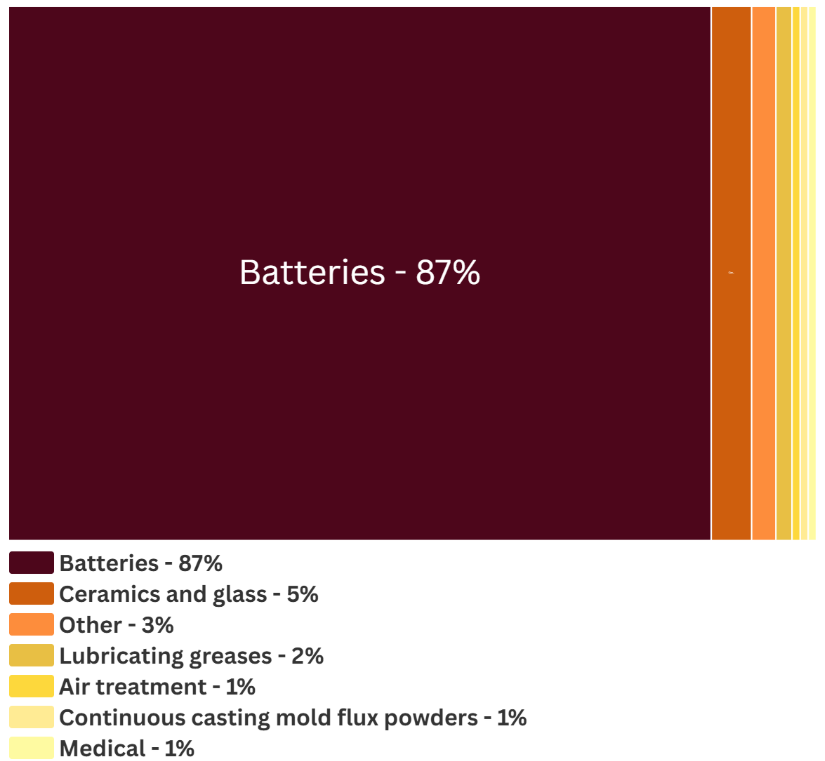
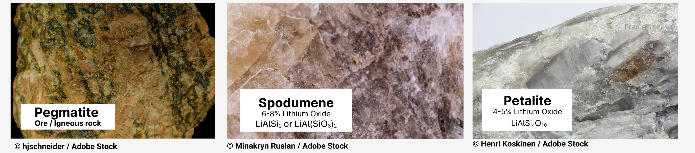

Lithium is an alkali metal. These metals are highly reactive in air at standard temperature and pressure. Lithium was first discovered in 1818 in Sweden. In 1855, Robert Bunsen and Augustus Matthiessen at the University of Heidelberg in Germany, proved that lithium metal could be recovered in bulk amounts from brines via electrolysis. Their work provided the foundation for commercial-scale lithium refining which also began in Germany in 1923.
Lithium-containing minerals are embedded in an igneous rock called pegmatite. Pegmatite is an ore that can host spodumene, petalite, and other minerals from which elemental lithium can be recovered. Lithium can also be found in salty solutions called brines in underground aquifers.
There are two ways to mine lithium, either through hard-rock mining in surface mine operations or through brine mining that recovers the lithium from brine that is pumped from underground. Greenbushes Mine is the largest lithium hard-rock mining site to date, located in south-west Australia. Operations began producing tin in 1888. Since 1983, the mine has developed into a leading producer of lithium ore. Today, Greenbushes supplies 20% of the world's lithium by mining and exporting spodumene concentrates of technical and chemical grade.
Hard rock lithium mining is the process of extracting lithium from minerals like spodumene. To start mining, topsoil and overburden, or the dirt that doesn’t have the sought mineral deposit, is excavated to reveal lithium containing ore. The exposed rock is exploded so it can be released and gathered then transported to separation facilities.
The spodumene ore is crushed then milled to a fine powder. The powder is passed through screen filters to separate out quartz and feldspar impurities. The spodumene powder is mixed with water, and chemical reagents like sodium oleate and sodium silicate to form an aqueous slurry. This slurry is pumped into a froth flotation unit where pipes at the bottom of the tank blow air. The air bubbles force the spodumene particles to float to form a mineral rich froth. This recovered concentrate is roasted above 1000 C which decomposes the spodumene crystals structures so that they are more easily recovered in subsequent acid leaching treatment. The roasted spodumene is mixed with sulfuric acid at 250 C to form lithium sulfate which is miscible in water. Once cooled, the roasted, acid treated spodumene is water-leached. With the lithium sulfate dissolved in water, lime (Ca(OH)2 or soda ash (Na2CO3) is mixed in to precipitate out lithium carbonate (Li2CO3). The largest importer of Australian lithium concentrate in 2023 was China, which imported 1,387 MT. South Korea was second, importing 9 MT. Lithium carbonate is a precursor for lithium metal, a material critical to efficient batteries.
Although Australia exports over 60% of the world’s lithium, the largest lithium reserves exist in South America. One of the largest lithium brine mining operations is called SQM Salar. This facility started producing lithium carbonate from the Atacama salt flats of northern Chile in 1997. These salt flats are part of what's been deemed the “Lithium Triangle” (term coined in 2015), where 60% of the world's lithium reserves occur. In the last 15 years, the table height of groundwater in some areas of the salt flat has receded by over 10 meters! As this height lowers the ground above is vulnerable to sinking and collapsing.
Rather than use explosives to acquire lithium contained in rock, in some areas of the salt flats lithium happens to be dissolved in the brines of these aquifers. Wells have been drilled to allow for the brine to be pumped into collection ponds. These ponds are usually around 1-2 meters deep. Overtime the water evaporates and sodium and potassium chloride eventually settle at the bottom. Lime (Ca(OH)2) is added in as well to remove impurities like magnesium. Once the concentration reaches 6 wt % lithium, the lithium chloride solution is mixed with soda ash (sodium carbonate) in heated agitation tanks to precipitate out lithium carbonate (Li2CO3). The precipitate is filtered, washed and dried into a fine powder. The largest importer of Chilean lithium carbonate is China, which imported 89,623 MT in 2023. South Korea was second, importing 23,180 MT.
What is lithium used for?

Figure 1: Industrial uses of lithium. Data source: USGS National Minerals Information Center, 2025.
What do some lithium minerals look like?

Figure 2: Different types of lithium containing materials.
Where are lithium mineral deposits?

Figure 3: Global lithium reserves as reported by the USGS. Data is from https://mrdata.usgs.gov/general/map-global.html
Where is lithium mined?
Scroll with your mouse or touchpad over the tagged locations on the map to zoom in/out.
Who imports lithium?
Click on the blue bubbles to see where gold is imported from.